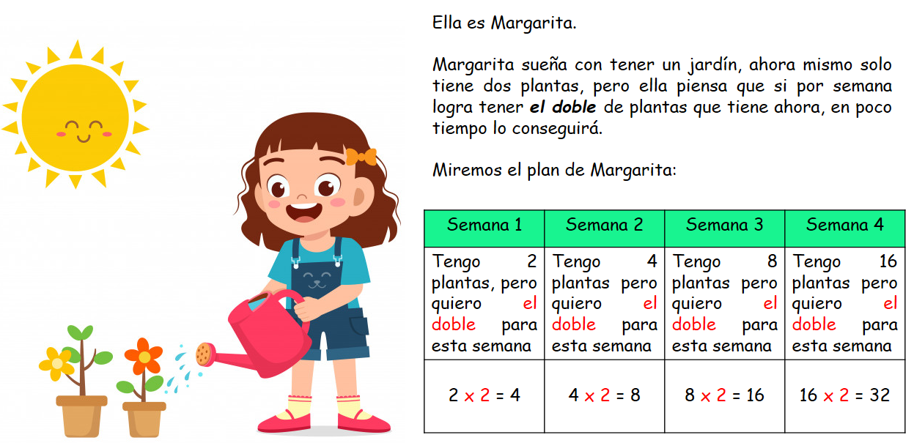
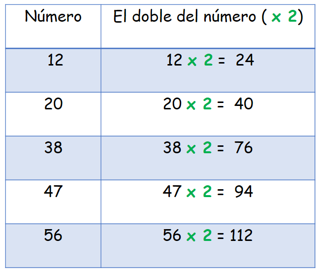
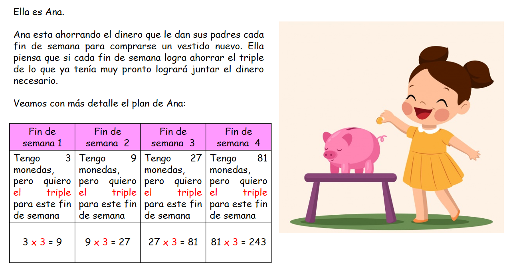
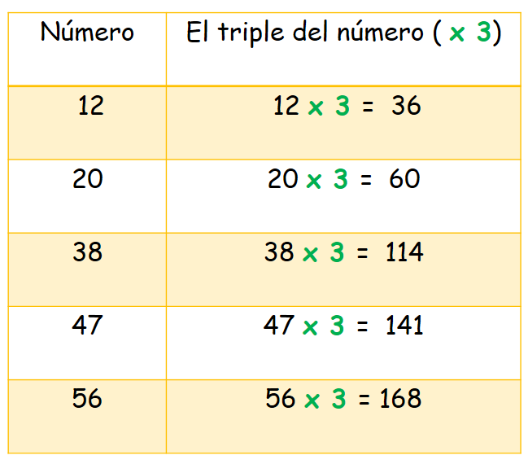
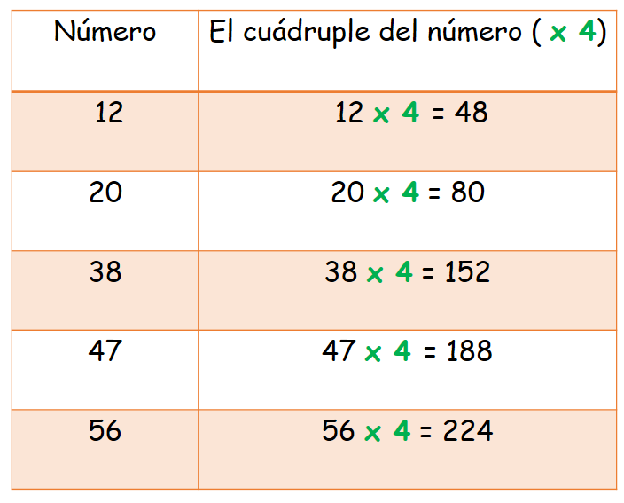

El doble, el triple y el cuádruple de un número
En este capítulo vamos a usar la multiplicación.
¿Qué es el doble, el triple y el cuádruple de un número y para qué nos sirve?
Seguro has escuchado alguna vez estas tres palabras “doble, triple y cuádruple”, pues ellas hacen referencia a una cantidad que se convierte en dos veces más grande, en tres veces más grande o en cuatro veces más grande. Para hacer que estas cantidades se transformen usamos una operación: La multiplicación.
Saber hallar estas cantidades nos ayudará a ser más ágiles y rápidos en el momento de resolver situaciones como estas:
- Marcos tiene 14 años y su hermano el doble de su edad
- Susana compró 3 dulces y Luciana compró el triple de dulces
- El mes pasado mis padres pagaron $48.000 de electricidad, este mes deben pagar el cuádruple del valor del mes pasado
Hallar estas cantidades es muy sencillo, solo tendrás que usar una operación: la multiplicación por una cifra.
- ¿Qué vamos a aprender?
- El doble de un número
- El triple de un número
- El cuádruple de un número
(1)El doble de un número:
Hallar el doble de un número significa hallar la cantidad que es dos veces mayor, es por esto que para hacerlo solo tenemos que usar una multiplicación por una cifra, es decir, debes multiplicar por 2.
Regla:
Para hallar el doble de un número solo tienes que multiplicar el número por dos.
Observa:
Si observas bien lo que ha hecho Margarita te darás cuenta que para hallar el doble de un número simplemente multiplicó por dos. Es así como la multiplicación hace que de forma muy simple puedas encontrar un número que se repite en dos veces sin necesidad de sumarlo.
Observa estos ejemplos más sencillos:
(2)El triple de un número:
Hallar el triple de un número significa hallar la cantidad que es tres veces mayor, es por esto que para hacerlo solo tenemos que usar una multiplicación por una cifra, es decir, debes multiplicar por 3.
Regla:
Para hallar el triple de un número solo tienes que multiplicar el número por tres..
Observa:
Si te fijas en el plan de Ana encontrarás que ella triplicó el número de monedas cada fin de semana, multiplicando las monedas que ya tenía por tres, sin necesidad de hacer una suma larga de números repetitivos.
Ahora observa estos ejemplos más sencillos:
(3)El cuádruple de un número:
Hallar el cuádruple de un número significa hallar la cantidad que es cuatro veces mayor, es por esto que para hacerlo solo tenemos que usar una multiplicación por una cifra, es decir, debes multiplicar por 4.
Regla:
Para hallar el cuádruple de un número solo tienes que multiplicar el número por cuatro.
Observa:
Para descubrir la edad de Lucy solo tienes que multiplicar la edad de Tom x 4. Así: 5 x 4 = 20. Lucy tiene 20 años.
Ahora observa estos ejemplos más sencillos:
Material extra para trabajar el tema de doble, triple y cuádruple:
En el siguiente enlace podrás descargar un pdf con ejercicios sobre el doble y el triple de un número creado por Actividadeseducativas.net.
Dando click en este enlace encontrarás un pdf descargable para trabajar el doble y el triple creado por Fichasparaimprimir.com.
Vídeos orientativos:
En el siguiente vídeo “ El doble de un número” de SofiaXT encontrarás una explicación sencilla sobre el triple de un número.
En este vídeo “ 3° de primaria: doble y triple” de Matecitos.com encontrarás una explicación clara y resumida sobre cómo hallar el doble y el triple de un número.